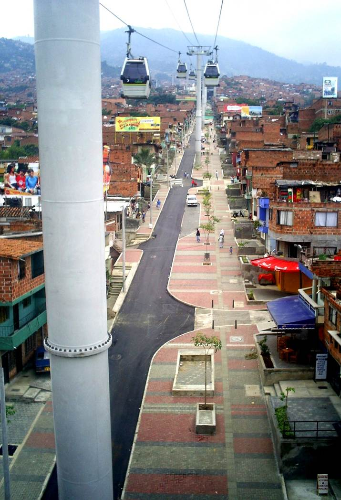

View from the neighborhood Doce de Octubre to the layout of neighborhood Popular, Faculty of Architecture, National University of Colombia, 1985.
Introduction
In his book The Colombian Conflict in Historical Perspective, Fernan Gonzalez argues that Colombia’s historic lack of strong centralized control has contributed to the 53-year conflict between guerillas, paramilitaries, and the state. The most violent city in Colombia, Medellin, provides an example of city efforts to combat violence through planning initiatives. We've specifically explored how government planning policies have impacted the growth of informal settlements on the northern fringes of Medellin, using two example neighborhoods: Popular in the east and Doce de Octubre in the west. Doce de Octubre was partially planned through city initiatives in the 1960's through 1990's, though the housing is largely informal. Popular grew organically, with winding and blind streets and alleyways, largely without the benefit of centralized planning initiatives until the recent PUI policy.1, 2
In the 1960’s-1980’s, the northern barrios experienced sudden expansion and population growth. Some people migrated from rural areas looking for jobs in industrialized Medellin; some pushed outward from neighborhoods in Medellin that had become unaffordable. The population growth and informal construction in these regions has been categorized as “pirate” settlements. Popular and Doce de Octubre are two examples of illegal settlements located in the hills around the valley of central Medellin -- a feature that has made them difficult to control and monitor, difficult to access, and vulnerable to Medellin’s deadly landslides.
3
Growth of informal settlements from 1991 to 1997 to 2011. Especially in the northwest region, the settlements expand and shrink erratically as government initiatives seek to formalize them in the late 1990's. Maps created by Jose Jaime Samper Escobar.
The national government sought to address population expansion by providing housing and infrastructure throughout the 1950’s-1980’s, but they couldn’t meet the demand. Many subsequent government initiatives instead adopted construction subsidies to encourage safer informal construction with better materials. The national utility company played a key role in “normalizing” fringe neighborhoods by providing free utilities, since this proved cheaper than continually fixing stolen utility lines. To service remote neighborhoods, the utility company built roads that have become bus routes, until recently the only transportation into and out of the most remote and mountainous neighborhoods.Because of devastating landslides in the 1970’s and 1980’s, and the growing threat of guerrilla presence in these remote neighborhoods, the government of Medellin began to ramp up intervention efforts in informal neighborhoods in the 1990’s with a program called PRIMED, and again in the 2000’s with the PUIs. Doce de Octubre experienced greater effects from the earlier programs, but Popular has been a neighborhood of particular focus for the PUIs. Homicide rates in these areas have historically decreased with greater government intervention; however, as homicide rates city-wide have decreased, internal displacement has risen. Gangs still control many neighborhoods of Medellin, using the same check-points as previous criminal organizations of the 1990’s.
4
Homicide Rate vs. Displacement. Source: CODHES and Medellin Medical Inquirer's Office.
Today, Comuna 6, Doce de Octubre, in the north-west, has more ordered streets, historically lower homicide rates, and a higher strata (wealthier) population than Comuna 1, Popular, in the north-east.
Strata of Medellin and Natural Disaster Risk Zones; strata go from 1 (lightest) to 6 (darkest blue). Source: City of Medellin
Population of Medellin and Elevation; Darker orange indicates higher population, and elevation ranges from lower green to higher red. Source: City of Medellin
After looking closely at the intentions and policies of two major planning interventions in these neighborhoods -- the PRIMED and POT -- we will look at their results in the physical structure of Doce de Octubre and Popular through articles, maps, and photos. Our visual analysis has relied primarily on two sources: publically available data from the City of Medellin and Open Street Maps, and the National University of Colombia’s CEHAP school. The data, used for our maps, must be viewed skeptically. Though we assume that it’s largely correct, both Open Street Maps (which is crowd-sourced) and statistics reported by the City (which must be interrogated: who reported these numbers? under what conditions?) may be incomplete or inaccurate. We’ve used several photos that document the conditions of informal settlements in the early 1980’s, taken and published by CEHAP, the school of habitat, a division of the architecture department at the National University of Columbia. The founding of the school and its initial field research from 1981-1985 was initiated by the South-South Cooperation, a United Nations agency, as part of an initiative called the Program of Studies of Living in Latin America (PEVAL).

Water collection point in El Morro, neighborhood Doce de Octubre, Faculty of Architecture, National University of Colombia, 1985.
PRIMED: Foreign NGOs and social capital
PRIMED, or Integral Program to Improve Subnormal Neighborhoods in Medellín (Programa Integral de Mejoramiento de Barrios Subnormales en Medellín), initiated in 1992 to address “subnormal” neighborhoods, characterized by the state as having informal housing and drug trafficking. People living in these areas were characterized as undereducated, with high unemployment rates, reactionary women and children, and many disaffected young men who would turn to gangs.5
These areas often also fell in risk zones of landslides, being embedded in steep hills bordering the central part of the city, in land initially deemed uninhabitable. These neighborhoods also tended to be lower income than the central city, as measured by their “strata”. The national strata system, implemented by the utility company, divides citizens into six income levels, with the upper three strata (6-4) subsidizing the utility costs for the lower three (3-1). The neighborhoods focused on by ICT and PRIMED tended to have citizens in strata 1 and 2. A defined goal of the initiative was to raise the strata level to 2 or 3.These neighborhoods were often formed by people pushing out from the central city or immigrating in from the countryside. In the 1960’s and 1970’s Medellin’s central government was openly hostile to informal settlements, burning down the homes of people living there. However, after enough families had settled and staked a claim to the land, they were often able to block the government from this kind of action.
6
National and local policy gradually reflected the reality of rapid urban growth. The Instituto de Credito Territorial (Institute for Territorial Credit) or ICT, a national agency created in 1939 to address workers’ housing needs and specially centered in Medellin after 1956, built several middle-class housing projects in the northwest neighborhoods of the city. However, the ICT and similar national programs built nowhere near enough housing to meet the new demand. By the 1980’s and 1990’s, Medellin had begun to implement programs that, rather than openly fighting or providing an alternative to informal housing, sought to formalize them in various ways.7
PRIMED neighborhoods of operation: Phase I (1993-1997) in green, Phase II (1998-2003) in blue.
The PRIMED program was unique as a joint project between the governments of Colombia, Germany, and the United National Program for Development (PNUD). It prioritized social as well as structural objectives. PRIMED used a few key strategies to integrate its target neighborhoods into the city, based on past successes and failures. Its stated objectives were community participation, cooperation among entities involved, adequate construction and organizational standards, minimum construction subsidies, and integrality of the programs into the community.PRIMED opened local offices in their focus neighborhoods, mostly on the city’s western fringes, to build relationships with local community organizations and leaders. Through these partnerships they encouraged formal construction and urban development by granting land titles and subsidizing construction costs, while strengthening local organizations that would perpetuate the changes going forward. Once a neighborhood was deemed normalized to Level 1, PRIMED undertook to improve its planning, efficiency, and public space. This involved the Integral Urban Programs. The PRIMED Integral Urban Programs (also called Programs of Urban Improvement) trained local leaders to organize and unite their communities, and sought to integrate members of the community into PRIMED’s physical improvements of their neighborhoods. The idea was that members of the community would need to perpetuate the improvements after PRIMED’s initial interventions, and that increased community participation and communication would improve social conditions in the long run.
PRIMED Phase I focused extensively on Comuna 6 in the northwest. This neighborhood was settled in a combination of illegal, “pirate” occupation from internal displacement or rural migration, private ownership and development, and ICT planning and development. When PRIMED began to work with Comuna 6, many of the neighborhoods lacked basic infrastructure like water, and an estimated 58% of homes were illegally owned (without titles). Between 1993 and 1995, PRIMED invested 3,600 million pesos in improvement projects, including 160 meters of paths, 1,865 meters of aqueducts, 2,000 meters of sewers, 99 meters of walls to combat landslides, 147 linear meters of filters, and several soil and geotechnical studies to further combat landslide risk. Between 1995 and 1997, they planned to continue along these lines, bettering a total of 1,385 houses and relocating 199 from dangerous areas; as well as delivering 9,969 title deeds to houses.
8
I have been unable to verify if they achieved these numbers.
PRIMED Phase I's areas of focus and selection criteria. Diagram from UNESCO's 1996 PRIMED report.
Major accomplishments by objective of PRIMED. This includes all Comunas, not only Comuna 6 as discussed above. Table made by John Betancur.
Like the ICT, PRIMED focused its first round of efforts (1993-1997) in the northwest and central areas. It expanded into select northeast neighborhoods during phase two (1998-2003). However, in its later years, administrative changes increasingly hampered PRIMED’s effectiveness.9, 10
However, by this time, the urban fabric of neighborhoods formed in the 1960’s and 1970’s had become difficult to reshape.Like the ICT, PRIMED focused its first round of efforts (1993-1997) in the northwest Besides the grids themselves, we can see the lasting effects of planning in Comuna 1 vs. lack of planning in Comuna 6 neighborhoods by looking at the concentration of easements in each. Easements refer to roads built across someone’s property, implying that the road was needed but not planned beforehand as part of a grid. Easements indicate areas of organic, rather than pre-ordained, growth. The two neighborhoods exhibit clear differences in the number and pattern of easements. Here we can see the evidence of ICT’s and PRIMED’s earlier planning efforts.
Street Grids of Comuna 1 Popular (right) and Comuna 6 Doce de Octubre (left); Easements shown in Blue.

Cover of 2009 report titled "Homicide: Aproximations of the concepts of femicide, feminicide, and homicide in women" by the city of Medellin's department of Legal Medicine and Forensic Science
DDR and PUI: Guerillas, gangs, and demobilization
Medellin is a city that, like many others, was modified by a rapid urbanization process in which the government was not prepared to handle. Informal settlements were created and marginalized for years, resulting in the lack of formal political presence in these areas. At some point, gangs or armed groups replaced the government as providers of basic needs for the population, intentionally aiming to have control over these areas. This scenario was perfect for the rise of violence in the city.Beginning in the nineties, the city started the implementation of social and cultural projects to diminish the level of violence. Urban planning and renewal was used as a way to provide access to parks, plazas and city assets such as libraries, schools, playgrounds and other general open spaces. The integrated urban projects also provided the city, especially the marginalized and violent areas, with access to better transportation system and connection to job opportunities. Running parallel to that, the death of Pablo Escobar and peace agreements made with some of organized crime groups were essential to reducing crime.
Following the policies interventions during the 90’s, the first decade of the 21th century marked a significant decrease of violence in Medellin. In 2004, when the new mayor Sergio Fajardo took over, new methods of reclaiming government presence in informal settlements were put into work. His main goals were to reduce social inequality and violence in the city. By the end of 2007, for the first time, the homicide rates in the city were lower than the national rates.
Sergio Fajardo believed Architecture had the power to influence the quality of life in the low-income areas of the city. During his years in power, he started a plan for the construction of major infrastructure projects in these communities. At the same time, the mayor used new policies for the resolution of conflicts and to benefit residents with various resources for development. The combination of these two initiatives had a common goal of providing better education for the population. They were part of the program called “Medellin, la Ciudad más Educada”. We will be focusing on the DDR initiative and the Integral Urban Projects (PIU).

"Trash and problems of contaminacion, neighborhood Popular", Faculty of Architecture, National University of Colombia, 1985.
New metrocable line under construction.
DDRThe DDR process initiated as a National Policy in 2003 during Alvaro Uribe administration. It started with a peace agreement between the government and Paramilitary group BCN. Mayor Sergio Fajardo took the challenge of continuing the implementation of this program in Medellin. By the end of his administration, Comuna 1 had 527 demobilized individuals, while Comuna 6 had 248. These numbers are not totally surprising, since Comuna 6 had historically been given more attention in regards to neighborhood development and state presence. The short-term success of the program could not be carried out for many years. Some authors and researchers on the subject are skeptical when analyzing the results of the program.
Definitely the big challenge was the years after the demobilization process and reintegration of members of armed groups into society. Employment accessibility after demobilization is crucial to that objective. In the case of Medellin, Mayor Fajardo developed initiatives for educational assistance as a way of keeping this people from going back to organized crime. But the characteristics of Medellin did have an influence in this process. Although paramilitaries were demobilized, less visible young gangs were still active in informal settlement neighborhoods. So groups who are in control of certain areas start to recruit young demobilized members, and these teenagers see these opportunities as a way of earning more money than they would in low-wage jobs. Samber Escobar, in one of his articles, explains that because of these various armed groups who are embedded in the urban fabric of Medellin, young members could be absorbed by them after demobilization.In addition, the program is seen as having a high political background, since the demobilization was addressed to only paramilitary groups, while violence was taken towards other groups. In that case, the continuity of the program would depend always on the party in power at the moment.
The program had controversial results in reducing the conflict and maintaining these actors out of the crime scene. Although people felt insecure with the paramilitary groups, a territory that was before controlled by them was now, after demobilization, under conflict between youth gangs for its control, which would potentially cause more violence. On the good side, some authors believe that the process helped to support the physical interventions, called PUI’s, on the low-income communities. The state had more control of the territory and could now implement actions within the community.
PUI
The PUI’s projects can be explained as physical interventions in the most marginalized areas of the city of Medellin with the objective of providing great quality of space for residents who previously could not have access. It was part of the Mayor’s plan for bridging the gap of social inequality and improve neighborhood connection to public services. As it was noticed, these projects are mostly related to bringing education for population, but ended up also having cultural and entrepreneurial characteristics. It is interesting to notice the correlation between PUI’s and PRIMED, having a strong inspiration in the earlier initiatives; in fact, Samper Escobar believes there is a continuity between these two projects due to the fact that some of the same researchers worked on both processes.
11

Infrastructure of Medellin, copyright PUI.
Metrocable of Medellin, copyright J. Drissen.
The PUI’s were implemented by the EDU (Urban Development Company) and had as one specific point the participation of society. The objective was that the program did not become a top-down intervention and had a participative community engaged in the process. That was done through workshops to develop ideas for physical interventions. Comuna 1 was one of the most targeted areas during this process due to historically lack of state presence. In fact, these projects claimed to be a physical representation of public state presence in these long-time marginalized communities.The PUI’s intervention included 5 libraries, 10 new public schools and renovation of 132 existing schools, development of public spaces, and transit oriented interventions. The libraries were designed by major architects from around the world as part of the mayor’s plan to bring high quality space to people who did not have access.
Library Espania and Park of Medellin, copyright Municipality of Medellin.

Institución educativa Santa Teresa in El Triunfo.
Conclusion: an Evolving Political Situation
The presence of state planning initiatives in marginalized neighborhoods has had significant impact on the their development. This history of urban intervention is evident looking at the fabric of these neighborhoods today. Thanks to programs like ITC and PRIMED, Comuna 6, Doce de Octubre, in the north-west, has more ordered streets, historically lower homicide rates, and a higher strata (wealthier) population than Comuna 1, Popular, in the north-east. The street grid of each neighborhood reveals this difference of planning, as Comuna 1 has winding and chaotic streets, while Comuna 6’s tend to be straighter. However, Comuna 1 also has more extreme topography, and the street grid is also simply responding to this geographic reality.More recently, government interventions such as the PUI’s and DDR have added transit options, green space, and new community centers to Comuna 1. The positive impacts of these new investments have been visible in Comuna 1’s decreasing homicide rate. From 1994, a year after PRIMED began, until 2008, Comuna 6 had fewer homicides than Comuna 1. However, beginning in 2005, a year after Sergio Fajardo became mayor, Comuna 1 has had fewer homicides than Comuna 6. The one exception was in 2010, when the homicide numbers of both neighborhoods nearly doubled.

Homicides in the upper neighborhoods of Medellin, 1994-2016. Source: Medellin Medical Examiners Office.
The exception was a result of the deportation of Don Berna, former leader of the office of envigado cartel. Don Berna used to control most of the drug trafficking in the territory of Medellin, after he left, young drug groups started conflicts for the control of different areas causing the homicide rate to rise between 2008 and 2010. Because of this fact, some authors believe that PRIMED, PUI’s and DDR processes did not have a big impact on the reduction of crime. Clearly there has been improvement in informal settlements because of these programs, but it is still not possible to say for sure that there is a direct correlation between crime and the improvements. These authors believe that armed groups still have strong control over peaceful and violent times in the city, that they can control the homicide rates in the city. If there is no conflict for control of territories, the homicide rates drop, the opposite is also true for times of conflict. The difference between now and then, is that before Medellin used to have defined armed groups, now, after the demobilization of some of them, young members went to form less visible armed groups, but they still are working in informal communities.So, do improvement programs really have an impact on safety of communities? What can be done different to achieve stronger results?
Although these informal settlement rehabilitation programs have had positive impacts, they are also the result of complicated political motives, and subject to the whims of administrative overturn.

Captioned "Appropriation of spaces, neighborhood Doce de Octubre", Faculty of Architecture, National University of Colombia, 1985.
Please note: footnotes not visible on mobile.
Return to Student Projects